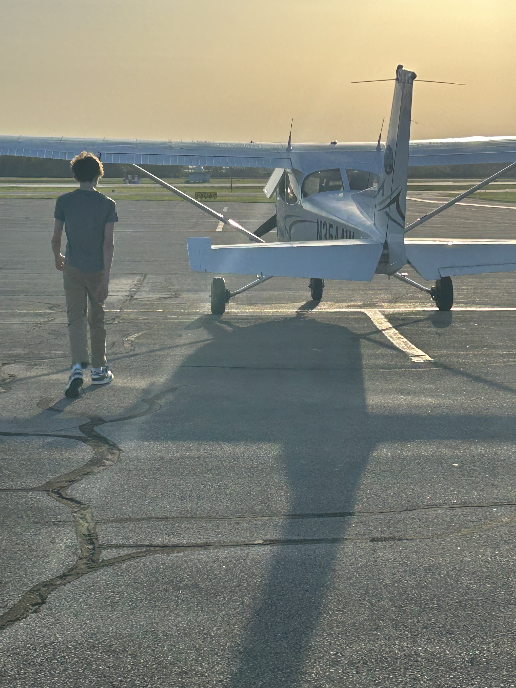
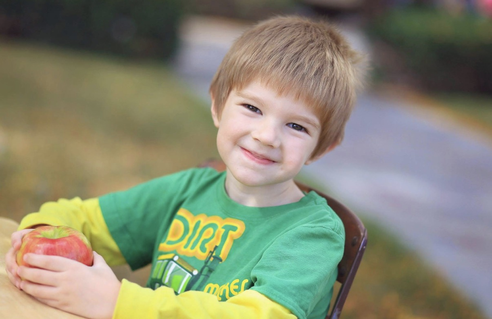
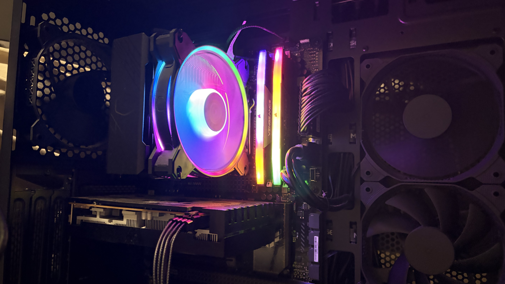
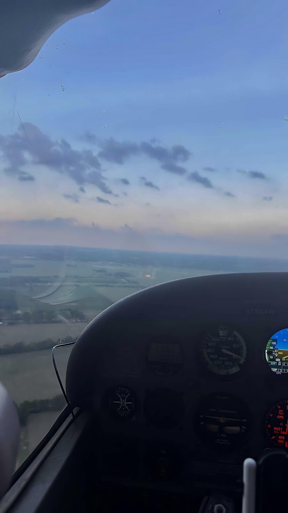
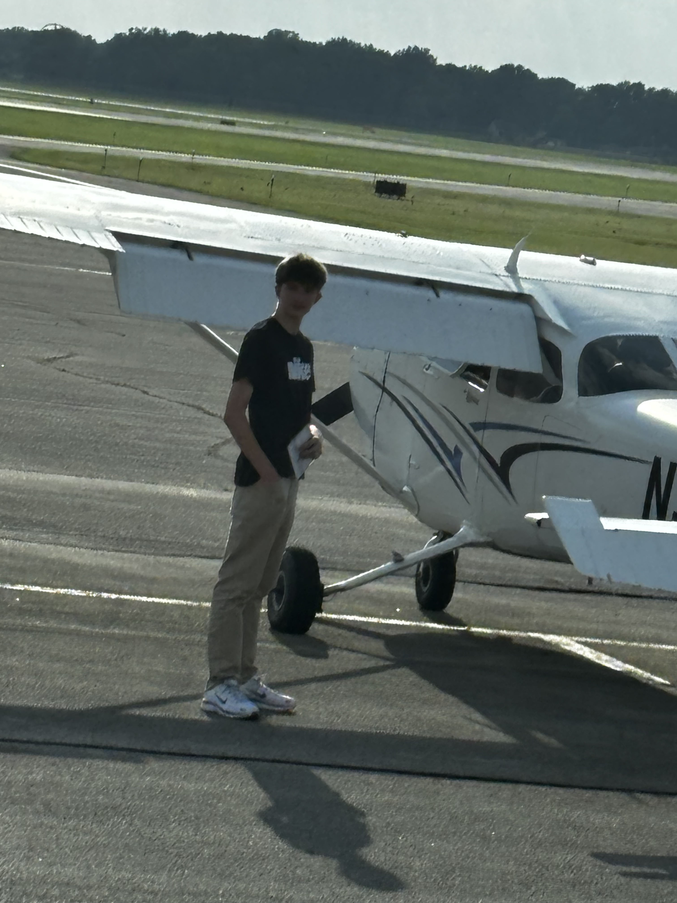

About Me
Passionate about technology, aviation, and continuous learning.
I’ve always enjoyed learning how things work, solving problems, and building new skills through hands-on experience. My interests have grown from curiosity into a deeper love for technology, creativity, and personal growth.


My Story
Curiosity has shaped the way I grow.
I was born in Muncie, Indiana in April 2011. From a young age, I was fascinated by computers, electronics, and the way technology works behind the scenes. Rather than simply using technology, I enjoyed taking it apart, learning from it, and experimenting with it whenever I could.
That curiosity became the foundation for many of the interests I have today, and it continues to guide how I learn, build, and explore new challenges.
Technology Journey
Hands-on experience has shaped both my skills and my mindset.

PCs Built
3+
Hardware Projects
5+
Technical Skills
Growing since 2016
I’ve built custom computers for myself, for family members, and for friends. I enjoy troubleshooting hardware and software problems, learning about new computer components, and expanding my technical knowledge. Working with computers has strengthened my patience, attention to detail, and problem-solving skills.

Programming Experience
Code has taught me how to think clearly.
I’ve been programming since middle school, and it has taught me logical thinking, problem solving, and perseverance. I enjoy learning new programming languages and technologies, and I like creating projects that challenge me and expand my skills.

Aviation
Flying has sharpened how I lead and learn.
Learning to fly has helped me develop responsibility, situational awareness, communication, time management, multitasking, confidence, and decision making under pressure. Aviation has become one of my biggest passions, and it continues to shape how I approach challenges both in and outside the cockpit.
Life Outside the Screen
What keeps me grounded, active, and inspired.
Spending Time with Friends
I enjoy making memories, collaborating with others, and maintaining strong friendships that keep life balanced and meaningful.
Sports & Fitness
I enjoy playing sports, working out, staying active, and challenging myself physically. Fitness has helped me build discipline, consistency, and perseverance.
Continuous Learning
I enjoy constantly learning new skills, exploring new technologies, and taking on projects that push me outside my comfort zone.
Timeline
Milestones that helped shape who I am.
Born in Muncie, Indiana
Developed an early interest in electronics
Began building computers
Started programming
Learned to fly airplanes
Going into my sophomore year and continuing to expand my technical skills
Personal Values
The principles that guide how I grow and work.
✦ Curiosity
I’m motivated by discovery and by understanding how things work.
⚙ Discipline
I believe consistency and effort create lasting progress.
↺ Continuous Learning
I enjoy expanding my skills and embracing new challenges.
◌ Problem Solving
I approach obstacles thoughtfully and stay focused on solutions.
Fun Facts
Quick details that make the story more personal.
Favorite Aircraft
The Cessna Citation CJ4 is a twin engine jet that combines luxury, efficiency, and performance all into one private jet with a range of 2491 miles.
Favorite Car
The Mercedes Maybach S680 bridges the gap between classic luxury and modern design. packing a powerful V12 engine sending 621 HP to all four wheels, outside of the hardware, this car also features the best german luxury money can buy as the car comes standard with premium high quality leather finishing, customizable interior lighting, multiple display screens, tables, and other features that never fail to surprise you, even after using it 100 times. The Maybach S680 has almost everything you could want in a car, ready to take on any challenge the roads may bring, all while keeping you comfortable.
Favorite Sport
In terms of team sports, I would have to say basketball, but specifically practicing alone with myself, there's something rhythmic about competing against yourself, it builds real discipline, and a real goal that you set the bar for. I never wanted to win against others, I just wanted to win against myself.
Current Goal
Build Something That Lasts
My current goal is to build something scalable that I can continue growing throughout my life. something that creates long-term value, provides opportunities for future growth, and becomes a legacy I can pass on to the next generation.

Closing
I’m always growing.
I enjoy challenging myself, solving problems, learning new technologies, and continuing to grow both personally and professionally. Whether I’m building computers, writing code, flying airplanes, working out, or spending time with friends, I approach everything with curiosity, dedication, and a desire to improve.